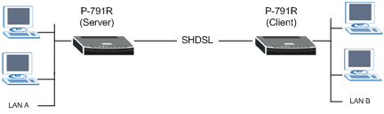

Вопрос:
Как настроить пару SHDSL-модемов P-791R для объединения двух сетей?
Ответ:
SHDSL-модемы P-791R можно настроить в режиме моста для объединения двух сетей имеющих одно адресное пространство. Схема сети представлена на рисунке ниже:

Приведем пример настройки модемов P-791R.
Внимание! Один из модемов должен быть настроен в режиме Client, а другой в режиме Server.
Настройки модемов можно производить как через веб-конфигуратор, так и через telnet-соединение. В данном примере рассмотрим последний вариант (настройку через SMT-меню).
Настройка первого модема P-791R (Client)
Menu 1 - General Setup
System Name= Prestige 1
Location=
Contact Person’s Name=
Domain Name=
Edit Dynamic DNS= No
Route IP= No
Bridge= Yes
Menu 2 - Wan Setup
Service Type= Client
Rate Adaption= Enable
Transfer Max Rate(Kbps)= 2312K
Transfer Min Rate(Kbps)= 136K
Standard Mode= ANSI(ANNEX_B)
Menu 3.2 - TCP/IP and DHCP Ethernet Setup
DHCP Setup
DHCP= None
Client IP Pool Starting Address= N
Size of Client IP Pool= N/A
Primary DNS Server= N/A
Secondary DNS Server= N/A
Remote DHCP Server= N/A
TCP/IP Setup:
IP Address= 192.168.1.1
IP Subnet Mask= 255.255.255.0
RIP Direction= Both
Version= RIP-2B
Multicast= None
IP Policies=
Edit IP Alias= No
Menu 11.1 - Remote Node Profile
Rem Node Name= ChangeMe Route= None
Active= Yes Bridge= Yes
Encapsulation= RFC 1483 Edit IP/Bridge= No
Multiplexing= LLC-based Edit ATM Options= No
Service Name= N/A
Incoming: Telco Option:
Rem Login= N/A Allocated Budget(min)= N/A
Rem Password= N/A Period(hr)= N/A
Outgoing: Schedule Sets= N/A
My Login= N/A Nailed-Up Connection= N/A
My Password= N/A Session Options:
Authen= N/A Edit Filter Sets= No
Idle Timeout(sec)= N/A
Настройка второго модема P-791R (Server)
Menu 1 - General Setup
System Name= Prestige 2
Location=
Contact Person’s Name=
Domain Name=
Edit Dynamic DNS= No
Route IP= No
Bridge= Yes
Menu 2 - Wan Setup
Service Type= Server
Rate Adaption= Enable
Transfer Max Rate(Kbps)= 2312K
Transfer Min Rate(Kbps)= 136K
Standard Mode= ANSI(ANNEX_B)
Menu 3.2 - TCP/IP and DHCP Ethernet Setup
DHCP Setup
DHCP= None
Client IP Pool Starting Address= N
Size of Client IP Pool= N/A
Primary DNS Server= N/A
Secondary DNS Server= N/A
Remote DHCP Server= N/A
TCP/IP Setup:
IP Address= 192.168.1.2
IP Subnet Mask= 255.255.255.0
RIP Direction= Both
Version= RIP-2B
Multicast= None
IP Policies=
Edit IP Alias= No
Menu 11.1 - Remote Node Profile
Rem Node Name= ChangeMe Route= None
Active= Yes Bridge= Yes
Encapsulation= RFC 1483 Edit IP/Bridge= No
Multiplexing= LLC-based Edit ATM Options= No
Service Name= N/A
Incoming: Telco Option:
Rem Login= N/A Allocated Budget(min)= N/A
Rem Password= N/A Period(hr)= N/A
Outgoing: Schedule Sets= N/A
My Login= N/A Nailed-Up Connection= N/A
My Password= N/A Session Options:
Authen= N/A Edit Filter Sets= No
Idle Timeout(sec)= N/A
Убедитесь, что значения VPI(Virtual Path Identifier) и VCI(Virtual Circuit Identifier) совпадают на обоих модемах.
Для этого, в меню 11.1 установите Edit ATM Options= Yes. Откроется меню 11.6 Remote Node ATM Layer Options VPI/VCI, в котором обратите внимание на значения VPI# и VCI#. Они должны совпадать на обоих модемах.
Menu 11.6 - Remote Node ATM Layer Options
VPI/VCI (LLC-Multiplexing or PPP-Encapsulation)
VPI #= 8
VCI #= 35
ATM QoS Type= UBR
Peak Cell Rate (PCR)= 0
Sustain Cell Rate (SCR)= 0
Maximum Burst Size (MBS)= 0
Значения Standard Mode установленые в меню 2 также должны совпадать, в противном случае соединение не будет работать.
Примечание: